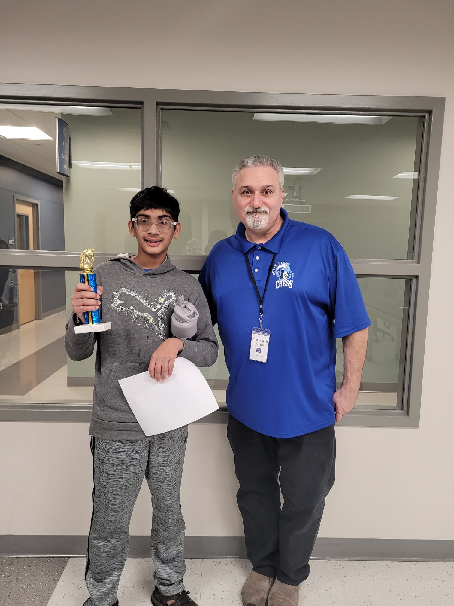
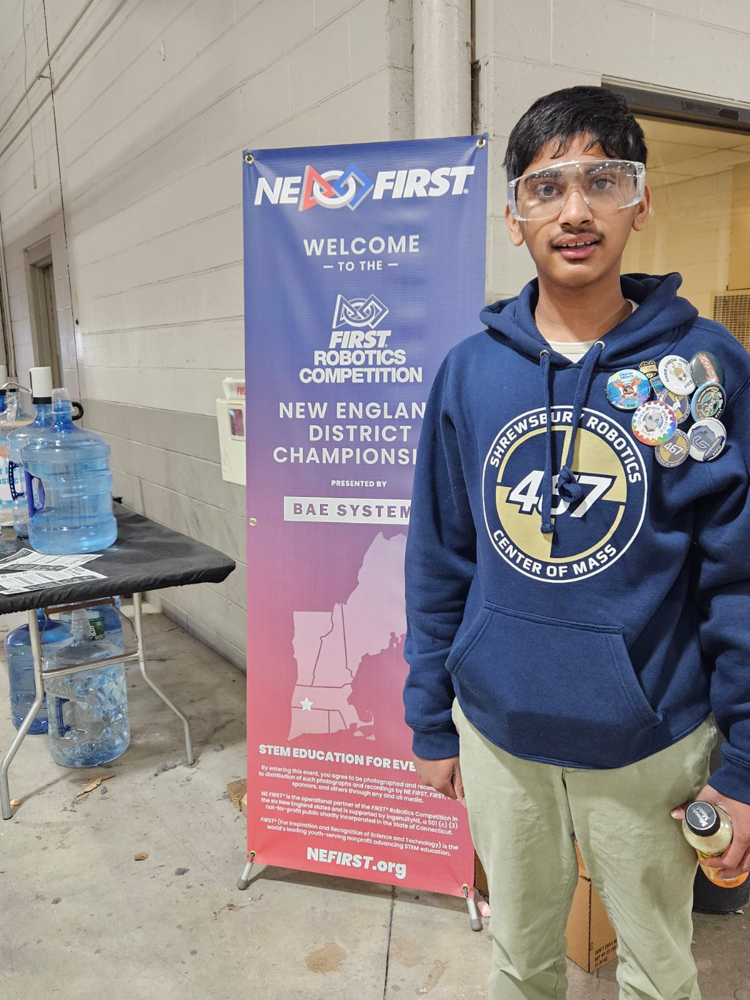

Throughout my life, I have been very passionate about chess. I first learned chess in second grade, and quickly developed a passion for it. In middle school, I used to play chess through the USCF, competing in tournaments in Rhode Island and Massachusetts. I amassed a peak over-the-board rating of around 1000. Now, even though I am not active on the tournament circuit anymore, I am still active on chess.com, playing both the rapid and bullet time controls. Overall, this hobby is something that has shaped me by sharpening my critical thinking and analytical skills.
For the last four years, I was part of my school’s Speech and Debate team. The first category that I competed in through middle school was Original Oratory, which required me to research and create my own speech before presenting it in a room with a judge and five other competitors. I did well in this category, winning multiple awards in 7th grade with my speech about the effects of Social Media and eventually rising to the top of my circuit with my speech regarding instant gratification. In high school, debate became available, so I switched to Public Forum Debate. In this category, a new topic is released every month, and me and a partner have to prepare rigorous arguments on both sides and debate another team arguing the opposing side. That year, my partner and I were some of the best novices on both the team and the region. I also experimented with Congressional Debate, which is a simulation of the US Congress. In general, this hobby has allowed me to not only form logically sound arguments in a short timeframe, but also present them in a persuasive way.

In my freshman and sophomore years, I was a member in my school's FIRST Robotics Team. Specifically, I was a part of FRC Team 467, or the Center of Mass. On 467, I worked on the electrical subteam, which involved wiring the robot, configuring sensors, and troubleshooting issues both before and during competitions. This experience helped me take theoretical engineering skills and apply it in a rewarding, practical environment. Additionally, I was a member of the Elementary Presentations Outreach Committee, which organized presentations at each of our town’s five elementary schools showcasing the engineering design process and demonstrating our robot. This allowed me to not only learn engineering, but showcase it to our community and the future generation.
For the last three years, I have been conducting independent research. In eighth grade, I did a project on piezoelectric energy harvesting from sugar crystals. With this project, I found that it is possible to generate marginal amounts of electricity from sugar crystals. This project got first place at the regional fair and second place at the state fair, in addition to winning the Thermo Fischer Top 300 Junior Innovator’s award. Then, in ninth grade, I developed a wearable for the visually impaired using a Raspberry Pi, machine learning, and sensors, which ultimately proved to be of use to them. Then, last year, I conducted research on analyzing low-power IoT network packet transmissions to identify zero-day cyberattacks using generalized zero-shot learning. This ultimately increased zero-day detection by around 40%. This project advanced all the way to the state fair and was the most technically complex of all of my projects so far. By doing such independent research, I was able to learn a lot of interesting concepts that were not taught in school and contribute to science.
Throughout my time in high school, I have given back to my community in many ways. Firstly, I am a podcast host at AudioJournal, an organization that specializes in creating programs for visually impaired and print-disabled individuals. I specifically produce the ScienceJournal, which synthesizes multiple recent articles across many disciplines of science. Additionally, I am a recurring volunteer at Special Olympics MA, where I assist neurodivergent athletes in sports such as tennis, softball, pickleball, and track and field. Finally, for two years, I developed and ran ChessQuest, a free class at the Shrewsbury Public Library for elementary and middle schoolers that teaches the fundamentals of chess. I developed puzzles and interactive games, and finally held a tournament. Through all of these experiences, I felt happy to serve the community that has served me for so long.